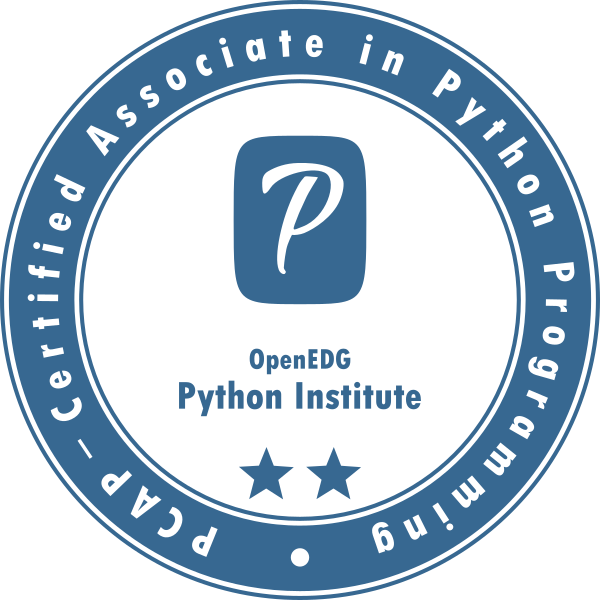

Rohith VikramathithanSystems Engineer,Tata Consultancy Services , Chennai |
 |
| To Develop a field specific skill set contributing to my career in a healthy way. Also making a steady if not fast paced contribution to the organization as well as the society along the way. |
|
|
| NAME | PLACE | BOARD | COURSE | MARKS | YEAR |
|---|---|---|---|---|---|
| SRI MANAKULA VINAYAGAR ENGINEERING COLLEGE | MADAGADIPET, PUDUCHERRY | PONDICHERRY UNIVERSITY | B.TECH (ECE) | 8.64 | 2016-2020 |
| ONGC PUBLIC SCHOOL | KARAIKAL, PUDUCHERRY | CBSE | 12TH | 427 OUT OF 500 | 2015-2016 |
| NAVY CHILDREN SCHOOL | VIZAG, ANDHRA PRADESH | CBSE | 10TH | 9.8 OUT OF 10 | 2013-2014 |
| LANGUAGE | READ | WRITE | SPEAK |
|---|---|---|---|
| ENGLISH | YES | YES | YES |
| HINDI | YES | YES | YES |
| TAMIL | NO | NO | YES |
| JAPANESE | NO | NO | YES |
Using visual stimuli from video recording devices fitted on vehicles and processing them to create a update to the location services in real time without any human interference.
Technologies Used:

|

|